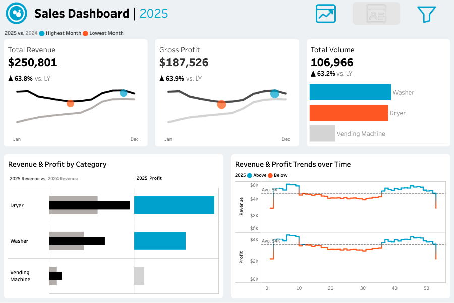

Designed and executed an end-to-end pipeline and solution for a 22-asset brick-and-mortar retail footprint (10 washers, 10 dryers, 2 vending machines). I architected the foundational relational database design from scratch, engineered a multi-year transaction database in Python to mirror real business conditions, and mapped the data warehouse into an executive-level Tableau dashboard to actively monitor business health and operational trends.

Phase 1: Relational Data Design

Developed a robust data generation engine using Pandas and NumPy to construct a clean four-table relational model (Transactions, Customers, Machines, Vending). Programmatically modeled complex business logic, including a 6-month initialization curve for realistic customer ramp-up, precise weekend demand spikes, and tight Gaussian variances for utility and inventory COGS metrics to replicate authentic financial constraints.
Phase 2: Data Visualization & Strategy
Synthesized the data warehouse into an interactive, user-focused executive dashboard. Developed key performance indicators (KPIs) to track year-over-year revenue velocity ($250K+ total revenue), monitor overall profit margins, isolate performance trends across product categories (Washers vs. Dryers vs. Vending), and capture core operational timelines such as grand opening ramp-up phases and seasonal macro-shifts.